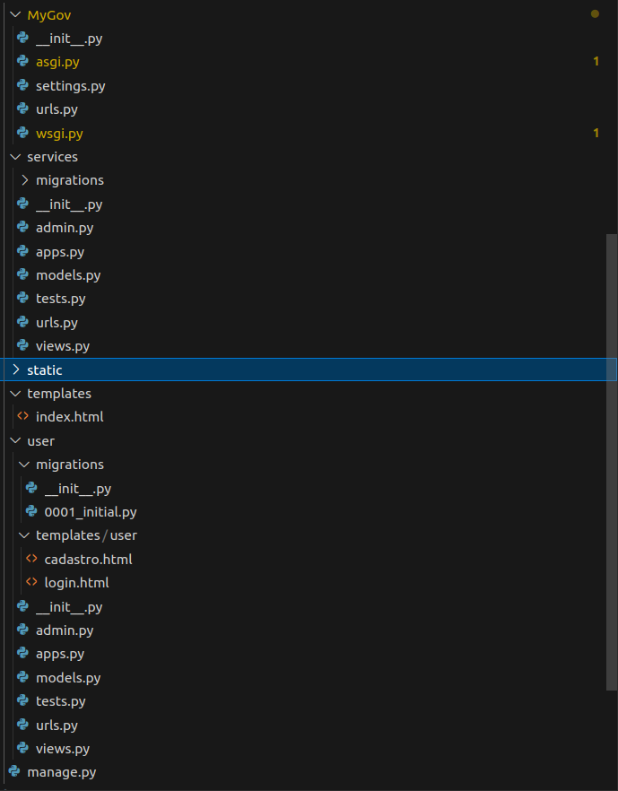

Reutilização de Software
Introdução
Nesse artefato será evidenciado as práticas de reutilização de software utilizadas na construção da aplicação MyGov, baseada no site da Terracap e em suas funcionalidades. O objetivo da reutilização de software é diminuir o tempo de desenvolvimento do projeto ao utilizar frameworks e códigos já desenvolvidos para serem empregados em funcionalidades da aplicação.
Metodologia
Para o desenvolvimento desse aspecto do projeto, foi realizada uma reunião com os membros do grupo Whiskey em que algumas funcionalidades acerca do desenvolvimento do MVP são divididas. Nessa divisão, o integrante Vitor Borges ficou encarregado da elaboração da interface de interação com o usuário, enquanto João Pedro e Leonardo Gonçalves ficaram responsáveis por elaborar o banco de dados e a camada de modelos relativas à funcionalidade. A gravação da reunião está disponível a seguir.
Reutilização
Django
O framework utilizado para a elaboração da interface gráfica foi o Django, da linguagem Python. Abaixo está a estrutura de arquivos gerada pelo framework:

Os arquivos mais relevantes nesse contexto são urls.py, settings.py e models.py.
urls.py
Nesse arquivo, são definidas os paths da aplicação. Na parte de reutilização de código temos as bibliotecas django.contrib e django.urls
from django.contrib import admin
from django.urls import include, path
urlpatterns = [
path("", include("services.urls")),
path("admin/", admin.site.urls),
path("user/", include("user.urls")),
]
settings.py
Nesse arquivo, são definidas as componentes e bibliotecas necessárias para o framework funcionar adequadamente.
"""
Django settings for MyGov project.
Generated by 'django-admin startproject' using Django 5.0.7.
For more information on this file, see
https://docs.djangoproject.com/en/5.0/topics/settings/
For the full list of settings and their values, see
https://docs.djangoproject.com/en/5.0/ref/settings/
"""
import os
BASE_DIR = os.path.dirname(os.path.dirname(os.path.abspath(__file__)))
# <a>*Quick-start development settings - unsuitable for production*</a>
# <a>*See https://docs.djangoproject.com/en/5.0/howto/deployment/checklist/*</a>
# <a>*SECURITY WARNING: keep the secret key used in production secret!*</a>
SECRET_KEY = 'django-insecure-(m=c-8$x^0x_sm#%l@vch!i^heeksov%wi7=_k&vdlm3s9_xc='
DEBUG = True
ALLOWED_HOSTS = []
# <a>*Application definition*</a>
INSTALLED_APPS = [
'django.contrib.admin',
'django.contrib.auth',
'django.contrib.contenttypes',
'django.contrib.sessions',
'django.contrib.messages',
'django.contrib.staticfiles',
'services',
'user',
]
MIDDLEWARE = [
'django.middleware.security.SecurityMiddleware',
'django.contrib.sessions.middleware.SessionMiddleware',
'django.middleware.common.CommonMiddleware',
'django.middleware.csrf.CsrfViewMiddleware',
'django.contrib.auth.middleware.AuthenticationMiddleware',
'django.contrib.messages.middleware.MessageMiddleware',
'django.middleware.clickjacking.XFrameOptionsMiddleware',
]
ROOT_URLCONF = 'MyGov.urls'
TEMPLATES = [
{
'BACKEND': 'django.template.backends.django.DjangoTemplates',
'DIRS': [os.path.join(BASE_DIR, 'templates')],
'APP_DIRS': True,
'OPTIONS': {
'context_processors': [
'django.template.context_processors.debug',
'django.template.context_processors.request',
'django.contrib.auth.context_processors.auth',
'django.contrib.messages.context_processors.messages',
],
},
},
]
WSGI_APPLICATION = 'MyGov.wsgi.application'
# <a>*Database*</a>
# <a>*https://docs.djangoproject.com/en/5.0/ref/settings/#databases*</a>
DATABASES = {
'default': {
'ENGINE': 'django.db.backends.sqlite3',
'NAME': os.path.join(BASE_DIR, 'db.sqlite3'),
}
}
# <a>*Password validation*</a>
# <a>*https://docs.djangoproject.com/en/5.0/ref/settings/#auth-password-validators*</a>
AUTH_PASSWORD_VALIDATORS = [
{
'NAME': 'django.contrib.auth.password_validation.UserAttributeSimilarityValidator',
},
{
'NAME': 'django.contrib.auth.password_validation.MinimumLengthValidator',
},
{
'NAME': 'django.contrib.auth.password_validation.CommonPasswordValidator',
},
{
'NAME': 'django.contrib.auth.password_validation.NumericPasswordValidator',
},
]
# <a>*Internationalization*</a>
# <a>*https://docs.djangoproject.com/en/5.0/topics/i18n/*</a>
LANGUAGE_CODE = 'en-us'
TIME_ZONE = 'UTC'
USE_I18N = True
USE_TZ = True
# <a>*Static files (CSS, JavaScript, Images)*</a>
# <a>*https://docs.djangoproject.com/en/5.0/howto/static-files/*</a>
STATIC_URL = 'static/'
# <a>*Default primary key field type*</a>
# <a>*https://docs.djangoproject.com/en/5.0/ref/settings/#default-auto-field*</a>
DEFAULT_AUTO_FIELD = 'django.db.models.BigAutoField'
AUTH_USER_MODEL = 'user.User'
models.py
Esse arquivo define as classes da modelagem do nosso banco de dados relacional implementado com o Django. Foram utilizadas as bibliotecas django.db e user.models.
from django.db import models
from user.models import User
# <a>*Model Endereco*</a>
class Endereco(models.Model):
complemento = models.CharField(max_length=255)
address = models.CharField(max_length=255)
cep = models.CharField(max_length=10)
uf = models.CharField(max_length=2)
cidade = models.CharField(max_length=100)
bairro = models.CharField(max_length=100)
user = models.ForeignKey(User, related_name='enderecos', on_delete=models.CASCADE)
def validate_registration_data(self):
pass # <a>*implementar lógica*</a>
def update_profile(self, name, address, cep, date_of_birth):
pass # <a>*implementar lógica*</a>
# <a>*Model Information -> TALVEZ SEJA MELHOR COMO UMA VIEW*</a>
class Information(models.Model):
numero_processo = models.CharField(max_length=50)
tamanho_imovel = models.CharField(max_length=50)
numero_habite_se = models.IntegerField()
data_expedicao = models.DateField()
tipo_declaracao = models.BooleanField(default=False)
tipo_proprietario = models.CharField(max_length=50)
ano_habite_se = models.IntegerField()
alienacao = models.CharField(max_length=255)
def show_information(self):
pass # <a>*implementar lógica*</a>
def edit_information(self):
pass # <a>*implementar lógica*</a>
# <a>*Model DeclaracaoRetroVenda herdando Content*</a>
class DeclaracaoRetroVenda(models.Model):
regiao = models.CharField(max_length=100)
codigo_imovel = models.CharField(max_length=100)
endereco = models.ForeignKey(Endereco, on_delete=models.CASCADE)
information = models.OneToOneField(Information, on_delete=models.CASCADE)
def visualizar_mapa(self):
pass # <a>*implementar lógica*</a>
def solicitar_por_regiao(self, regiao):
pass # <a>*implementar lógica*</a>
def solicitar_por_codigo(self, codigo_imovel):
pass # <a>*implementar lógica*</a>
Outros arquivos
Por ser um framework com muitas funcionalidades, existem outros arquivos que utilizam bibliotecas Django para o funcionamento da aplicação desenvolvida. Porém, os arquivos listados acima e suas bibliotecas são os mais relevantes para compreender o funcionamento.
API IBGE
Para buscar informações sobre as regiões administrativas e podemos marcar as mesmas no mapa utilizamos a API gratuita do IBGE, nela é possível buscar por código, nome, estado e região administrativa para popular os formulários e facilitar a vida do usuário.
Geolocalização
Dentro da plataforma é possível selecionar endereços a partir de um mapa, para implementar isso no nosso projeto, utilizamos a biblioteca Leaflet para renderizar mapas interativos em conjunto com a OpenStreetMap para buscar coordenadas a partir do nome de uma localidade. Desta forma foi possível integrar a feature do usuário buscar o endereço marcando um ponto no mapa.
Fluxo de funcionalidade
Para ter acesso aos serviços o usuário deve possuir uma conta em nossa plataforma, para isso primeiro é necessário realizar o cadastro, assim que o usuário se cadastra o login é feito de forma automática e o usuário é redirecionado para a página inicial. A partir disso ele pode acessar livremente a área de serviços. A seguir o vídeo do fluxo:
Bibliografia
A reutilização de software e suas aplicações. Blog Casa do Desenvolvedor. (https://blog.casadodesenvolvedor.com.br/reutilizacao-de-software/)
Reutilização de Software na Engenharia de Software: Conceitos e práticas. LinkedIn. (https://pt.linkedin.com/pulse/reutiliza%C3%A7%C3%A3o-de-software-na-engenharia-conceitos-e-gomes-rocha-odxxf)
Diretrizes para Reutilização de Software. CIn UFPE. (https://www.cin.ufpe.br/~rls2/processo_tg/Metodologia%20S%26B/guidances/guidelines/software_reuse_6BA25ECC.html)
Análise da Reutilização de Software em Projetos de Desenvolvimento. (https://www.enacomp.com.br/2011/anais/trabalhos-aprovados/pdf/enacomp2011_submission_43.pdf)
Reuso de Software: Uma Abordagem Prática. (https://www.inf.ufpr.br/silvia/ES/reuso/reusoAl.pdf)
Histórico de Versão
| Versão | Data | Descrição | Autor(es) | Revisor(es) |
|---|---|---|---|---|
1.0 |
15/08/2024 | Confecção do artefato | Whiskey | Papa |
1.1 |
16/08/2024 | Adição de API e Geolocalização | Whiskey | Papa |
1.2 |
16/08/2024 | Correção de ortografia e Videos | Foxtrot | Yankee |